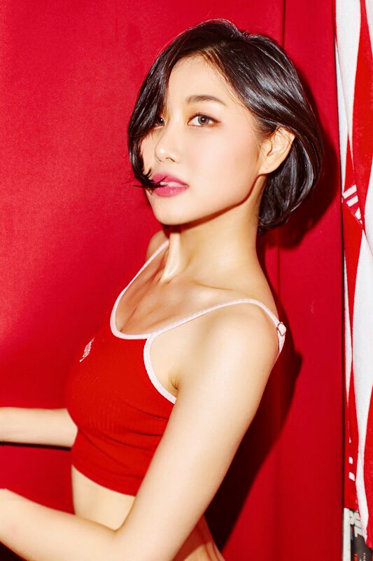

This is Mei, an all-around entertainer.
I majored in Korean language and literature, and Chinese at
Guangdong University of Foreign Studies in China.
I am a freelance designer who is currently working in graphic designers-
logos, packages, characters, fansies, and art design.
My dream is to help make the world beautiful and useful
through the harmony of beauty and technology.
